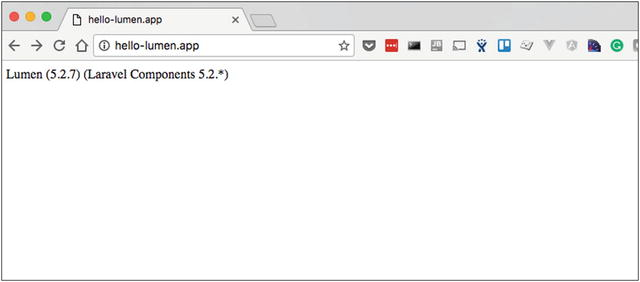

Let’s dive right into Lumen. In this chapter, you’ll learn how to set up a new Lumen project and you’ll explore some of Lumen’s basic features:
- Routing
- Middleware
- Requests
- Responses
To follow along, you should have the recommended Homestead environment from Chapter 1 installed.
Setting Up a New Project
Before you can get started, you need to create a new Lumen project in Homestead. To create a new project, ssh into Homestead virtual machine and use Composer to create a new Lumen project (Listing 2-1).
# On your local machine
$ cd ∼/Code/Homestead
$ vagrant ssh
# In the virtual machine
vagrant@homestead:∼$ cd ∼/Code
vagrant@homestead:∼/Code$ composer create-project \
laravel/lumen=∼5.2.0 --prefer-dist hello-lumen
vagrant@homestead:∼/Code$ cd hello-lumen
Listing 2-1.
Creating a New Lumen Application in Homestead
The book examples assume Homestead was cloned to the suggested path ∼/Code/Homestead. Adjust the commands if you cloned Homestead elsewhere.
In the Homestead virtual machine, you change the directory to ∼/Code, where your application files will live. Next, you use Composer’s create-project command to create a new Lumen project. The last argument in the create-project command tells Composer to create the project in the path ∼/Code/hello-lumen. Now that you’ve created a new project on the virtual machine, you should also see a shared local path at ∼/Code/hello-lumen on your own machine.
The next step is telling Homestead about the hello-lumen application. On your local machine, open ∼/.homestead/Homestead.yaml and find the default project under the sites key (Listing 2-2).
sites:
- map: homestead.app
to: /home/vagrant/Code/Laravel/public
Listing 2-2.
Default Sites Configuration in Homestead.yaml
Replace it with the code in Listing 2-3 and save the file.
sites:
- map: hello-lumen.app
to: /home/vagrant/Code/hello-lumen/public
Listing 2-3.
Default Sites Configuration in Homestead.yaml
Configure the project’s hostname and the path to the public folder on the virtual machine. Save the file and run vagrant provision on your local machine to update Homestead with the new configuration changes (Listing 2-4).
> cd ∼/Code/Homestead
> vagrant provision
Listing 2-4.
Provision Vagrant Locally
Every time you update Homestead.yaml you will need to run the vagrant provision command.
Once Vagrant is finished provisioning the machine, the last step is adding an entry to the hosts file on your local machine. The hosts file will map the hostname hello-lumen.app to your virtual machine’s IP address. You can find Homestead’s IP address by finding the ip key in the ∼/.homestead/Homestead.yaml file—you should see something like ip: "192.168.10.10".
Take note of the IP address so you can add it to the local hosts file. To update the hosts file on Mac or Linux, the file path is /etc/hosts; if you are on Windows, the file path is C:\Windows\System32\drivers\etc\hosts. Add the line from Listing 2-5 to your hosts file.
192.168.10.10 hello-lumen.app
Listing 2-5.
Adding Hostname to Hosts File
Be sure to use the IP address found in your ∼/.homestead/Homestead.yaml file, not the IP shown in this book. It might be the same, but make sure.
After updating the hosts file, visit
http://hello-lumen.app/
in your browser and you should see something similar to Figure 2-1.

Figure 2-1.
Lumen default route
You should now have a working hello-lumen project. Let’s get to work!
Routes
Routing (
https://lumen.laravel.com/docs/5.2/routing
) is the first feature we will cover. Application routes in Lumen are defined in the app/Http/routes.php file. In the most basic form, routing configuration includes an HTTP verb (GET, POST, etc.) which accepts a URI and a Closure. We will use the Closure style routes in this chapter, but we will use controllers throughout the book.
The first routes will be two simple “Hello World” examples to introduce you to routing:
- /hello/world which responds with the text “Hello World”
- /hello/{name} which responds with a customized greeting
Before you define your own routes, if you open the file app/Http/routes.php, the default contents looks like Listing 2-6.
<?php
$app->get('/', function () use ($app) {
return $app->version();
});
Listing 2-6.
The Default Lumen Route in app/Http/routes.php
The $app variable in the routes file is an instance of \Laravel\Lumen\Application which is defined in the bootstrap/app.php file. The application routes file is imported near the end of bootstrap/app.php (Listing 2-7).
$app->group(['namespace' => 'App\Http\Controllers'], function ($app) {
require __DIR__.'/../app/Http/routes.php';
});
Listing 2-7.
The Bootstrap File Importing Routes
The Hello World Route
Your first route is a simple /hello/world route that responds with the text “Hello World”. Open up the app/Http/routes.php file and add the route shown in Listing 2-8.
18 $app->get('/hello/world', function () use ($app) {
19 return "Hello world!";
20 });
Listing 2-8.
The /hello/world Route in app/Http/routes.php
The $app->get() method accepts a URI and a \Closure that gets executed to create the response. The route returns a string response. If you visit
http://hello-lumen.app/hello/world
in your browser, you will see the response “Hello world!”
The $app instance has HTTP methods like get, put, post, and delete which are used to define routes. In this example, the defined route will respond to GET requests. If you try to send a POST request, you will get a 405 response (Listing 2-9).
$ curl -I -XPOST http://hello-lumen.app/hello/world
HTTP/1.1 405 Method Not Allowed
Server: nginx/1.9.7
Content-Type: text/html; charset=UTF-8
Transfer-Encoding: chunked
Connection: keep-alive
allow: GET
Cache-Control: no-cache, private
date: Tue, 29 Dec 2015 06:28:46 GMT
Listing 2-9.
Trying to POST to the Hello World Route
Route Parameters
The second route you are going to add has a dynamic route parameter (Listing 2-10).
22 $app->get('/hello/{name}', function ($name) use ($app) {
23 return "Hello {$name}";
24 });
Listing 2-10.
Your Second Route
The route URI has a required route parameter {name} which is then passed to the \Closure. You then return your concatenated $name variable, which creates the HTTP response shown in Listing 2-11.
$ curl -i http://hello-lumen.app/hello/paul
HTTP/1.1 200 OK
Server: nginx/1.9.7
Content-Type: text/html; charset=UTF-8
Transfer-Encoding: chunked
Connection: keep-alive
Cache-Control: no-cache
Date: Sat, 26 Dec 2015 21:27:19 GMT
Hello paul
Listing 2-11.
Example Response from the Router
You can define multiple route parameters in one route and add constraints to them (only digits). I will go over plenty of route examples as you work through this book.
Middleware and Responses
Similar to express.js (
http://expressjs.com/
) and many other web frameworks, Lumen has HTTP middleware (
https://lumen.laravel.com/docs/5.2/middleware
). Middleware provides a way to filter incoming HTTP requests before a defined route handles the request. You can use middleware to do any number of things, like authentication, validating a signed request, and CORS support, to name a few. Middleware classes are typically created in the app/Http/Middleware path by convention; I suggest sticking to the convention unless you plan on writing a standalone package that includes middleware.
Lumen has two types of middleware configuration: global middleware and route middleware. What is the difference between the two types? Global middleware runs on every HTTP request and route middleware runs on specific routes (or groups of routes) configured to run the middleware. We will go over an example of each.
We will also cover an example of creating a response object in middleware. We will work with response objects throughout this book, but we will only touch on them lightly in this chapter.
Global Middleware
The first middleware example you will write is a simple request logger that logs every incoming request to the storage/logs/lumen.log application log file. Configuring the logging middleware to be a global middleware makes sense because we want to log all HTTP requests.
Start by creating the file app/Http/Middleware/RequestLogMiddleware.php with the contents shown in Listing 2-12.
1 <?php
2
3 namespace App\Http\Middleware;
4
5 use Log;
6 use Closure;
7 use Illuminate\Http\Request;
8
9 class RequestLogMiddleware
10 {
11 public function handle(Request $request, Closure $next)
12 {
13 Log::info("Request Logged\n" .
14 sprintf("∼∼∼∼\n%s∼∼∼∼", (string) $request));
15
16 return $next($request);
17 }
18 }
Listing 2-12.
Creating the RequestLogMiddleware
Middleware needs to define a handle method that accepts two parameters: the request object and a Closure instance. The request object is an instance of Illuminate\Http\Request and represents the current request.
Each middleware must call return $next($request) at some point in order to continue processing the request.
Now you need to register your new middleware in bootstrap/app.php (Listing 2-13).
62 // $app->middleware([
63 // App\Http\Middleware\ExampleMiddleware::class
64 // ]);
65
66 $app->middleware([
67 App\Http\Middleware\RequestLogMiddleware::class
68 ]);
Listing 2-13.
Registering a Global Middleware
The Application::middleware() method accepts an array of middleware class names. I have included the commented out middleware so you can see other types of middleware that ship with Lumen.
There is one more step to get the middleware working: you need to enable facades (
https://laravel.com/docs/5.2/facades
) so the Log class will work as expected.
In bootstrap/app.php, uncomment the code in Listing 2-14.
26 // $app->withFacades();
27 $app->withFacades();
Listing 2-14.
Enabling Facades in the Application
With facades enabled, the new middleware will add a log entry to storage/logs/lumen.log for every request (Listing 2-15).
[2015-12-26 21:47:53] lumen.INFO: Request Logged
GET /hello/paul HTTP/1.1
...
Listing 2-15.
Partial Log Output from RequestLogMiddleware in lumen.log
Facades
The facade pattern provides a static interface to classes available in the service container (
https://lumen.laravel.com/docs/5.2/container
).
It offers a clean style that I personally like, but you are not required to use it.
Lumen offers various ways of resolving dependencies out of the container, which you will see in this book. Also be sure to read the “Resolving” section of the documentation (
https://lumen.laravel.com/docs/5.2/container
).
The middleware should be working. What happens if we forget to call $next($request)? To experiment, you would get the following response (Listing 2-16) by removing return $next($request) from the middleware (be sure to put it back).
$ curl -i http://hello-lumen.app/hello/paul
HTTP/1.1 200 OK
Server: nginx/1.9.7
Date: Sat, 26 Dec 2015 21:54:00 GMT
Content-Type: text/html; charset=UTF-8
Transfer-Encoding: chunked
Connection: keep-alive
Listing 2-16.
What Happens When $next($request) Is Not Returned?
Middleware can also control whether or not the HTTP request should continue being processed. For example, an authentication middleware would deny access to guests trying to access secured parts of the application by sending a 403 Forbidden response instead of proceeding with the request. Middleware should either allow the request to continue or send a response back.
Route Middleware
Our next middleware will be route middleware for the /hello/{name} route. Create a new middleware class in app/Http/Middleware/HelloMiddleware.php with the code from Listing 2-17.
1 <?php
2
3 namespace App\Http\Middleware;
4
5 use Closure;
6 use Illuminate\Http\Request;
7
8 class HelloMiddleware
9 {
10 public function handle(Request $request, Closure $next)
11 {
12 if (preg_match('/balrog$/i', $request->getRequestUri())) {
13 return response('YOU SHALL NOT PASS!', 403);
14 }
15
16 return $next($request);
17 }
18 }
Listing 2-17.
Creating the HelloMiddleware
The HelloMiddleware checks the request URI against a case-insensitive regex pattern. If the URI matches the regex pattern, the middleware returns a 403 forbidden response error with the response() helper function. If the user is not asking to say hello to a balrog, the request will proceed as expected.
66 $app->middleware([
67 App\Http\Middleware\RequestLogMiddleware::class
68 ]);
69
70 $app->routeMiddleware([
71 'hello' => App\Http\Middleware\HelloMiddleware::class
72 ]);
Listing 2-18.
Registering the HelloMiddleware
The $app->routeMiddleware() method takes an associative array. The key hello is a shorthand reference to the middleware class; the shorthand key configures routes to use the middleware (Listing 2-19).
22 $app->get('/hello/{name}', ['middleware' => 'hello', function ($name) {
23 return "Hello {$name}";
24 }]);
Listing 2-19.
Configuring Your Route to Use the HelloMiddleware
You have changed the second parameter in $app->get() to an array. The middleware key instructs your route to run the ‘hello’ middleware you defined in your bootstrap/app.php file. Note that the code example also drops use($app) in your Closure because you are not using $app inside the Closure.
Now if you try saying hello to a balrog the middleware will authoritatively stop the request (Listing 2-20).
$ curl -i http://hello-lumen.app/hello/balrog
HTTP/1.1 403 Forbidden
Server: nginx/1.9.7
Content-Type: text/html; charset=UTF-8
Transfer-Encoding: chunked
Connection: keep-alive
Cache-Control: no-cache
Date: Sun, 27 Dec 2015 02:00:27 GMT
YOU SHALL NOT PASS!
Listing 2-20.
Saying Hello to a Balrog
We are done with your quick tour of middleware. To learn more about middleware, read the full documentation (
https://lumen.laravel.com/docs/5.2/middleware
). Another good resource is reading the source code of the middleware that ships with Lumen.
The Request and Response Objects
You will become quite familiar with getting data from requests and returning responses while building APIs with Lumen. We will quickly touch on each so you can get your feet wet. We will be using these objects extensively throughout the book, so using them should become second nature by the end of this book. Let’s dive in to the request object first.
The Request
The request object (
https://lumen.laravel.com/docs/5.2/requests
) represents the HTTP request and is one of the essential objects that you need to familiarize yourself with. It provides methods to access basic information about the HTTP request and to access things like POST data and query string parameters, to name a few. To access the request in your routes, you type-hint the Illuminate\Http\Request class on your route. Type-hinting the request object (Listing 2-21) automatically injects the request from the service container (
https://lumen.laravel.com/docs/5.2/container
).
26 $app->get('/request', function (Illuminate\Http\Request $request) {
27 return "Hello " . $request->get('name', 'stranger');
28 });
Listing 2-21.
Using the Request Object
In Listing 2-21, the route returns a string from the query string parameter name, and the second argument, 'stranger', is the default value returned when the name parameter is not present in the request. Making a request without the name parameter will return the responses shown in Listing 2-22.
$ curl http://hello-lumen.app/request
Hello stranger
$ curl http://hello-lumen.app/request\?name\=Paul
Hello Paul
Listing 2-22.
Experimenting with Request::get()
The request object has many useful methods, and I highly encourage you to browse the source code and read all the documentation (
https://lumen.laravel.com/docs/5.2/requests
) on requests.
The Response
Lumen provides a response object to represent an HTTP response which provides convenient methods that make it easy to craft valid HTTP responses and return JSON, which is the response type you will return throughout this book—you are building APIs after all!
You can create a response in a number of ways, and I’ll show you a few examples, including crafting a response from the Illuminate\Http\Response object and some convenience functions for easily responding with JSON. We will also build on the request object to show you some basic content negotiation.
The first way to create a response is returning an instance of the Illuminate\Http\Response object in a route (Listing 2-23).
30 $app->get('/response', function (Illuminate\Http\Request $request) {
31 return (new Illuminate\Http\Response('Hello stranger', 200))
32 ->header('Content-Type', 'text/plain');
33 });
Listing 2-23.
Using the Illuminate Response Object
In Listing 2-23, we return the response object, set the status code to a 200 OK, and set the Content-Type header to text/plain. To expand on this example, let’s do some inline content negotiation and return JSON when the client asks for it (Listing 2-24).
30 $app->get('/response', function (Illuminate\Http\Request $request) {
31 if ($request->wantsJson()) {
32 return response()->json(['greeting' => 'Hello stranger']);
33 }
34
35 return (new Illuminate\Http\Response('Hello stranger', 200))
36 ->header('Content-Type', 'text/plain');
37 });
Listing 2-24.
Responding with JSON
In Listing 2-24, you use the Request object to check if the client is asking for JSON. If the client wants JSON, you use the response() helper function, which returns an instance of the Laravel\Lumen\Http\ResponseFactory. Now you can get a JSON greeting (Listing 2-25).
$ curl -H"Accept: application/json" \
http://hello-lumen.app/response
{"greeting":"Hello stranger"}
Listing 2-25.
Returning a JSON Response
The ResponseFactory has three convenient methods: make(), json(), and download(). You’ve seen json() already, but the above route could be written as shown in Listing 2-26 to use the make() method instead of initializing an instance of the response.
30 $app->get('/response', function (Illuminate\Http\Request $request) {
31 if ($request->wantsJson()) {
32 return response()->json(['greeting' => 'Hello stranger']);
33 }
34
35 return response()
36 ->make('Hello stranger', 200, ['Content-Type' => 'text/plain']);
37 });
Listing 2-26.
Using the ResponseFactory
Some people might prefer to directly initialize the Response object, but I personally like using the response() helper function. I think the helper function cleans up code nicely and is convenient. Note that the third argument in make() accepts an optional array of HTTP response headers.
Onward
We are done with the tour of the basic parts of Lumen. In the next chapter, we will create another Lumen application and prepare to write test-driven features as we work through the remainder of the book.